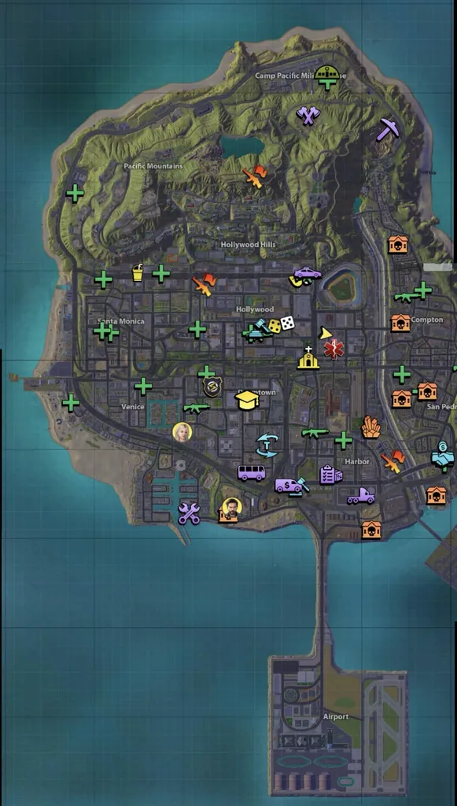

Seguridad Hospitalaria
Consulta los puntos ciegos recomendados para cada lugar.
Documento interno para uso exclusivo del área. Se agradece no compartir.
Mapa de patrullaje

Usa la rueda del mouse o haz doble clic para acercar. Arrastra para moverte. Pellizca con dos dedos para acercar. Arrastra para moverte.
Fotos de los puntos ciegos
Consejos y recomendaciones
Lo básico del departamento.
Antes de salir a patrullar
- Siempre en pareja y en una Dino del hospital.
- Grabar videos de 10 seg. con el dron. Al inicio y fin quitar dron para ver la hora del servidor.
En el lugar de investigación
- Luces y motor apagados, sin hacer ruido.
- Quien conduce no graba video: queda atento por si hay que irse.
Al terminar el recorrido
- Envía el informe enseguida.
- ¿Dudas? Acércate a mí.
Siempre
- Máxima atención a las macros.
- Las puertas de las salas deben estar cerradas.
- Sé reservado: nada de información a personas ajenas al hospital ni a rangos iniciales.
- Dentro del área, compartamos lo que aprendemos.